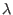

About McStas
Conditions of use
Authors/Contacts
Project funding
Screenshots
Download
Components
Linux Install (deb/rpm)
Mac OS X Install
Unix Install (src code)
Windows Install
Other Downloads (share)
Documentation
McStas manual
FAQ
Known problems
Publications
C Compilers
Other
Tools
Tutorial
Next: Exercise: Insert a sample Up: Exercises Previous: Exercise: Source and PSD
Exercise: Insert a monochromator
- Keeping your current components, insert a Monochromator_flat component (use the component library index to get the needed parameters) and a new set of PSD and L_monitor after the monochromator. Two new arms should be inserted to define the rotation point at the monochromator. One is used to rotate the monochromator, while the other rotates the instrument components that follow.
Insert the two new arms at (0,0,2) relative to the origin and the monochromator at (0,0,0) relative to the monochromator arm. Also, add two new input parameters of your instrument, which we will call OMM (Omega Monochromator) and TTM (Two Theta Monochromator). These will define the angles of rotation at the monochromator as portrayed in Figure 3.
- Given  = 4Å, and knowing that for the monochromator Å (Pyrolytic Graphite), use Bragg's law to determine the correct Bragg angle (i.e. OMM/TTM) of the monochromator for the reflection. Add the OMM and TTM input parameters to the DEFINE line at the beginning of the instrument file and give them the values you just calculated. Rotate the two arm components by OMM and TTM.
- Do a scan of OMM a couple of angles around the determined Bragg value to verify the finding, while keeping TTM fixed. This is done by replacing the fixed value of OMM in the Run Simulation window with two numbers separated by a comma, e.g. 20,25. These numbers represent the minimum and maximum values of OMM. A number of steps must also be given and this is done by changing the # steps value from 1 to e.g. 10. Check the position of the peak on the PSD and the wavelength on the L_monitor.
- What should
 be set to to get the reflection at exactly OMM (TTM)? Adjust for the monochromator and verify the calculation by a scan. Check the wavelength by plotting the scan.
be set to to get the reflection at exactly OMM (TTM)? Adjust for the monochromator and verify the calculation by a scan. Check the wavelength by plotting the scan.
- Determine the Bragg angle for the reflection in this setting of and verify it by scanning OMM. Set OMM to this value. Perform the simulation and check the wavelength distribution. Comment.
- Before you go on, change the minimum and maximum wavelengths of the source to a suitably narrow interval around 4Å. There is no need to produce neutron rays that will not be scattered at the monochromator.
Next: Exercise: Insert a sample Up: Exercises Previous: Exercise: Source and PSD Peter Kjær Willendrup 2015-11-12